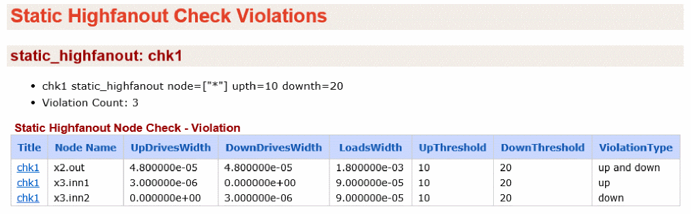

Static Highfanout Check (static_highfanout)
Spectre Syntax
title static_highfanout node=[n1 n2 ...] upth=<value> downth=<value> rcut=<value> <inst=[inst1 inst2...]> <xinst=[xinst1 xinst2...]> <subckt=[subckt1 subckt2....]> <xsubckt=[xsubckt1 xsubckt2....]> <depth=n> error_limit=<value>
SPICE Syntax
.cck title static_highfanout node=[n1 n2 ...] upth=<value> downth=<value> rcut=<value> <inst=[inst1 inst2...]> <xinst=[xinst1 xinst2...]> <subckt=[subckt1 subckt2....]> <xsubckt=[xsubckt1 xsubckt2....]> <depth=n> error_limit=<value>
Description
The static_highfanout check detects MOSFETs that have a gate connected to a high fanout node. The check reports nodes that have a count greater than the specified count.
The results are written to the static.xml file, which can be viewed in a Web browser.
Arguments
Example
chk1 static_highfanout node=["*"] upth=10 downth=20
.cck chk1 static_highfanout node=["*"] upth=10 downth=20
The above statement reports pMOSFETs whose loading-width to driving-width ratio is more than 10. In addition, nMOSFETs whose loading-width to driving-width ratio is more than 20 are reported. The report includes the violation type, displaying if it is a pull-up violation, pull-down violation, or both.
The following is an example of the report that is displayed in the Web browser:

Related Topics
Return to top